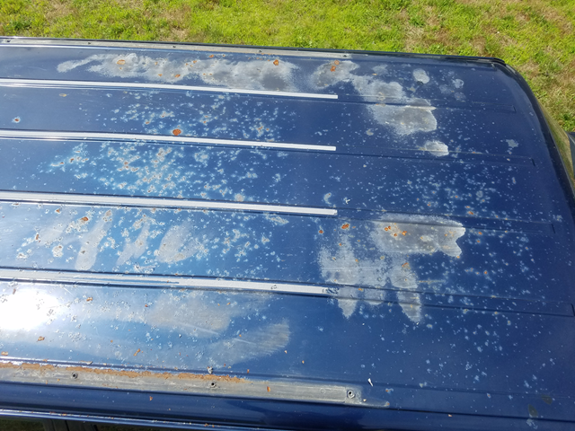
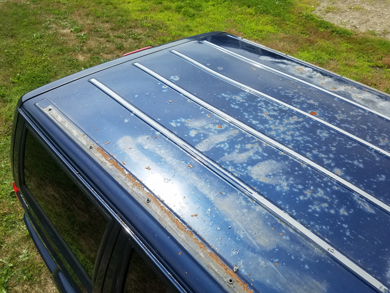
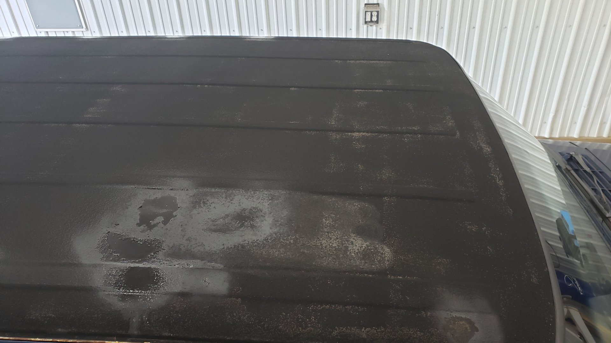
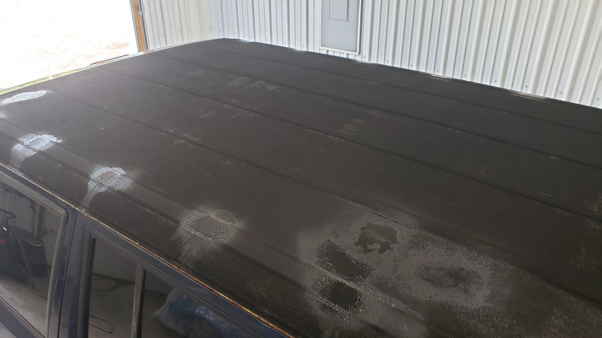
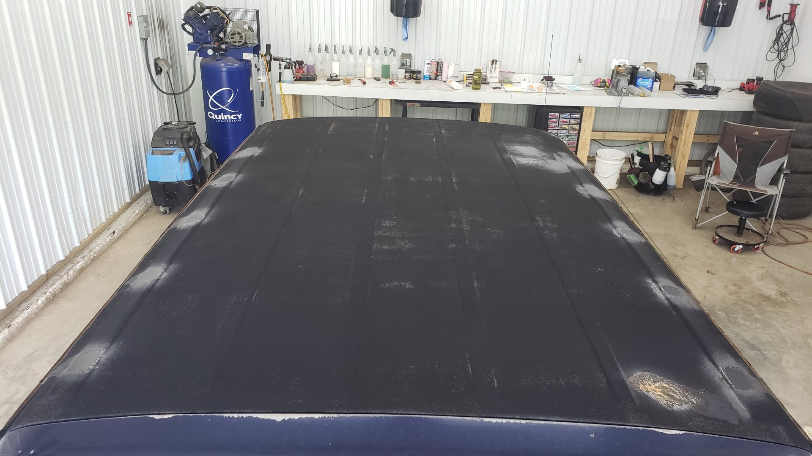
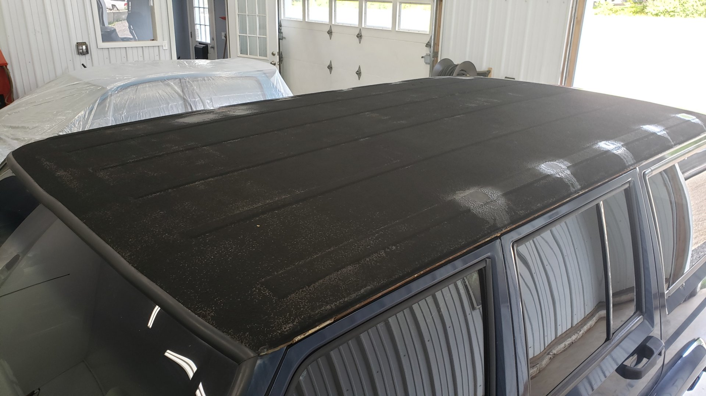
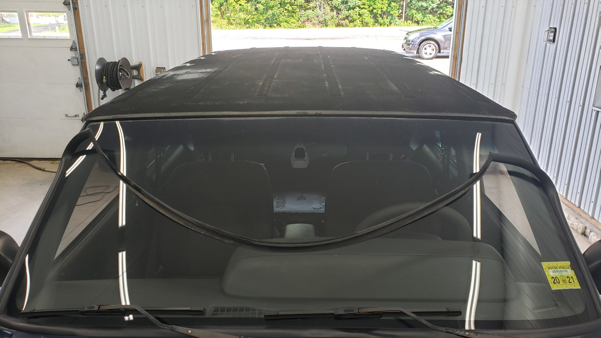

When you own a vehicle long enough you eventually reach the point where you have to fix something you “fixed” a few years back. My XJ has officially hit that point for me having owned it for 4 years now.
My XJ was in a bit of a rough shape when I first bought it. Besides having a small laundry list of issues it needed fixed, the paint on the roof was also rusting through.
 
At the time I saw the XJ as just a cheap beater and didn’t want to pay to have the roof resprayed so I opted to paint it with bedliner

Well the years haven’t been easy on the bedliner I used and honestly it got to the point where I was a little embarassed about it. Plus the XJ has slowly grown to be a real favorite of mine and I wanted to bring it back to a closer stock look.
   
The paint looks splotchy because I had to touch it up on several occassions. A few months prior to embarking on this project I decided to delete the OEM roof rails since they are prone to leaking and I wanted to switch to a rain gutter mounted roof rack.
I ended up welding up the mount holes for the roof rail and grinding them flush. I then touched them up with spray paint as I knew at the time it would only be temporary.
Preparation
To prepare I pulled back the windshield weatherstripping and removed the painted covers on the rain gutters. On 97+ XJs they started using an adhesive to hold the rain gutter covers in place which can make them incredibly difficult to remove without bending.
I found out if you let the Jeep sit in the sun for an hour or two it will soften up the adhesive and make them easier to remove. The process isn’t too difficult but can be a little nervewracking.

Removing the Bedliner
This part of the job was the absolute worst.